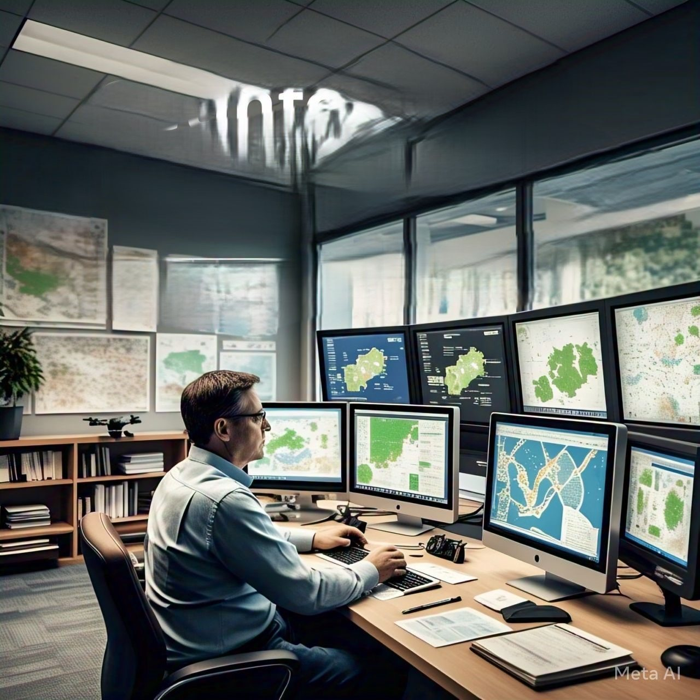
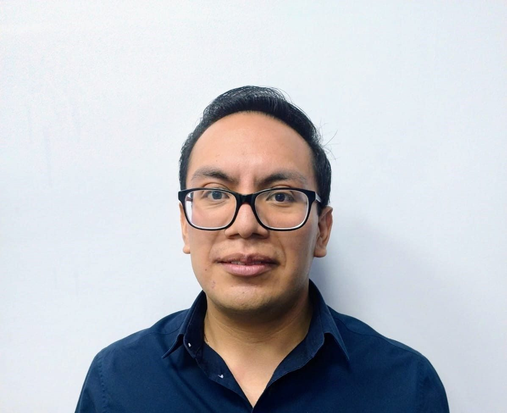

Licenciado en Geoinformática
Sergio Morales Meza
Analista y desarrollador SIG. Convierto datos territoriales en bases de datos espaciales, tableros, visores web y levantamientos con dron que ayudan a tomar decisiones.
-
Sistemas de Información GeográficaAnálisis espacial y cartografía en QGIS y ArcGIS
-
Software y bases de datosPostGIS, SQL Server, Python, R y GeoServer
-
DronesFotogrametría, mapeo y búsqueda y rescate
-
Dashboards y visores webPower BI, ArcGIS Dashboards y web mapping
Sector público y privado: Globant Secretaría de Seguridad del Edomex IEEM SACMEX

Datos geográficos que se pueden consultar, medir y explicar
Trabajo con información territorial de punta a punta: diseño y mantengo bases de datos espaciales en PostgreSQL/PostGIS, actualizo cartografía y catálogos, analizo patrones con Python y R, y publico los resultados en visores web y tableros que cualquier equipo puede usar.
He colaborado con instituciones de seguridad, electorales y de agua, y con empresas de tecnología, en proyectos de incidencia delictiva, cartografía electoral y administrativa, redes de transporte público y geomarketing. Como operador de dron, levanto información para fotogrametría, mapeo y apoyo en búsqueda y rescate.
Proyectos
Una selección de tableros, visores web, mapas temáticos y levantamientos con dron. Abre cualquier pieza para ver la imagen completa y las herramientas utilizadas.
Experiencia
Sector público y privado: seguridad, procesos electorales, agua, tecnología y consultoría geoespacial.
-
SACMEX
Sistema de Aguas de la Ciudad de MéxicoGestión de información geográfica para servicios urbanos.
Actual -
Globant
TecnologíaAnálisis y desarrollo con datos geográficos en proyectos de tecnología.
-
Secretaría de Seguridad del Estado de México
Seguridad públicaAnálisis espacial de incidencia delictiva y tableros de seguimiento.
-
Instituto Electoral del Estado de México
Organismo electoralManejo de cartografía electoral y bases de datos geográficas.
Herramientas
Organizadas como capas de un proyecto SIG: del dato crudo al mapa publicado.
Bases de datos
- PostgreSQL
- PostGIS
- SQL Server
- MySQL
- AWS RDS
SIG de escritorio
- QGIS
- ArcGIS Pro
- Geoprocesamiento
- Simbolización y diseño cartográfico
Programación
- Python
- R
- SQL
- JavaScript
Web mapping
- GeoServer
- Leaflet
- Folium
- ArcGIS Online
Tableros y BI
- Power BI
- ArcGIS Dashboards
- Análisis estadístico
- Geomarketing
Dron
- Fotogrametría
- Ortomosaicos y mapeo
- Búsqueda y rescate
Certificaciones
- Scrum
- Administración del Desarrollo Urbano y Ordenamiento Territorial
¿Tienes un proyecto con datos geográficos?
Escríbeme para colaboraciones, consultorías o vacantes en SIG, bases de datos espaciales y web mapping.